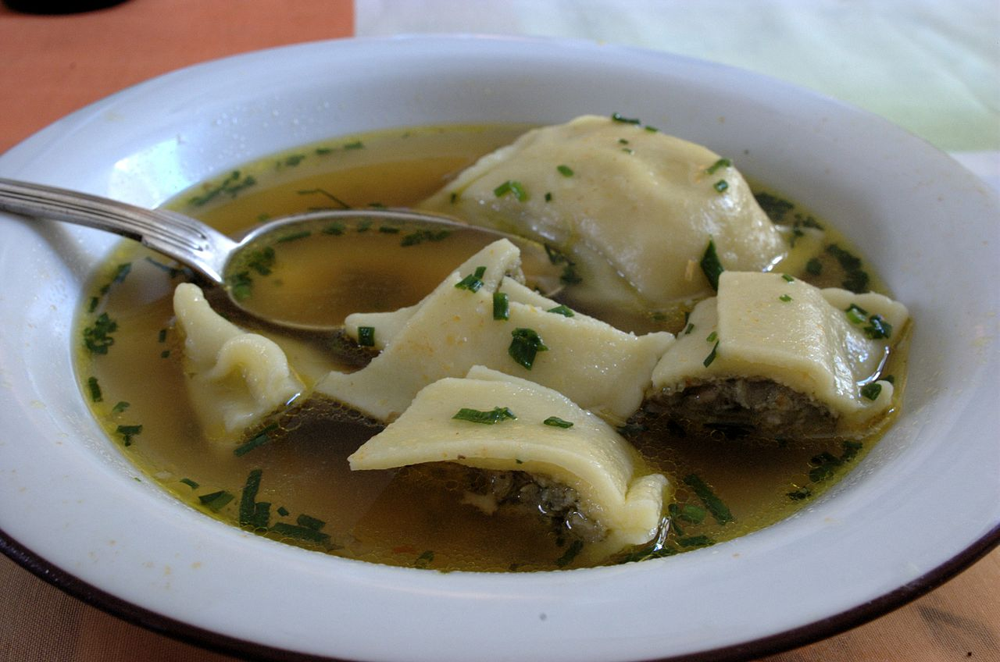
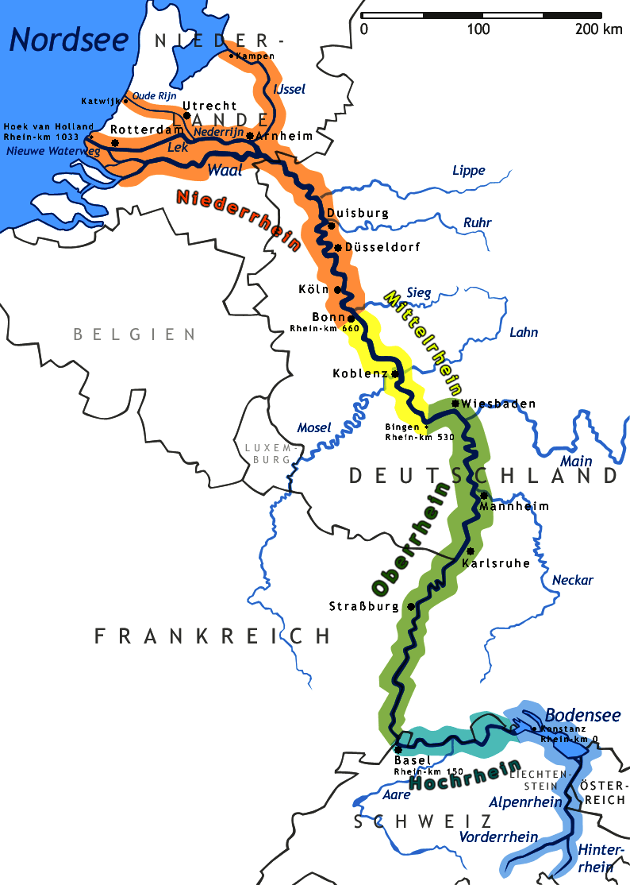

Germany
In a nutshell
Food
and drinks
Schwarzwälder Kirschtorte
Schwarzwälder Kirschtorte
Black Forest Cake
- Cream cake created in the 1930's
- One of the most famous cakes of Germany
Weißwurst
Weiswurst
White Saussage
- Bavarian saussage
- Minced veal and fresh pork back bacon
- Flavoured with parsley, lemon, mace, onions, ginger
Maultaschen
Maultaschen
- Originated in the region of Swabia
- Outer layer of pasta
- Filling consisting of meat, spinach, bread and onions
- Similiar to Italian ravioli
Scenery
and landscape
Schwarzwald

Black Forest
Schwarzwald
- Low mountain range in southwest Germany
- Many spruce trees, artificially planted
Rhein
Rhein
Rhine
- River
- Flowing from the Alps to the North Sea
- 766 miles
Education
school system
Grades
1 |
Amazing |
2 |
|
3 |
|
4 |
|
5 |
|
6 |
Amazingly awful |
Primary School
„Grundschule“
Primary school
Begin: age 6 to 7
4 years
End: age 10 to 11
You'll learn
- Math (basic arithmetic, geometry)
- German (reading, spelling, grammar)
- English or French (basic vocabulary, simple sentences)
- Culture (History, Music)
- Social skills (expressing yourself, ...)
- Science
Yaay, I made it!
Teacher recommends you one secondary school
You (e.g. your parents) decide
Your Options
- Low-Level: „Hauptschule“
- Mid-Level: „Realschule“
- High-Level: „Gymnasium“
Hauptschule
- Grade 5 to 9 5 years
- „Berufsreife“
- Then: apprenticeship or work
Realschule
- Grade 5 to 10 6 years
- „Mittlere Reife“
- Then: vocational school or work
Gymnasium
- Grade 5 to 12 8 years
- „Abitur“
- Then: college / university or work
- 2-3 languages
You'll learn
- Math
- German
- Languages: English, French, Latin, Spanish
- Science: Physics, Biology, Chemistry
- Geography, Social studies
- Music, Art
- Sports
Lifestyle
Free time
Lifestyle
- Different sports, most popular is soccer
- Organized in clubs with yearly membership fee
- allowed to go to weekly trainings, ...
Soccer
Folk Music
Pop Music
Folk Fetsivals
Funfairs
Skiing
Snowboarding
Climbing
Politics
Democracy in Germany
Sources
Images by flickr users:
- Dennis Kussener
- David-Anthony Gordon
- Philippe Amiot
- carnifex82
- orestART
- Li Gan Te
Sources
- http://de.wikipedia.org/wiki/Deutsches_Schulwesen
- http://www.schule-bw.de/schularten/hauptschule/faecher
- http://de.wikipedia.org/wiki/Unterrichtsfach